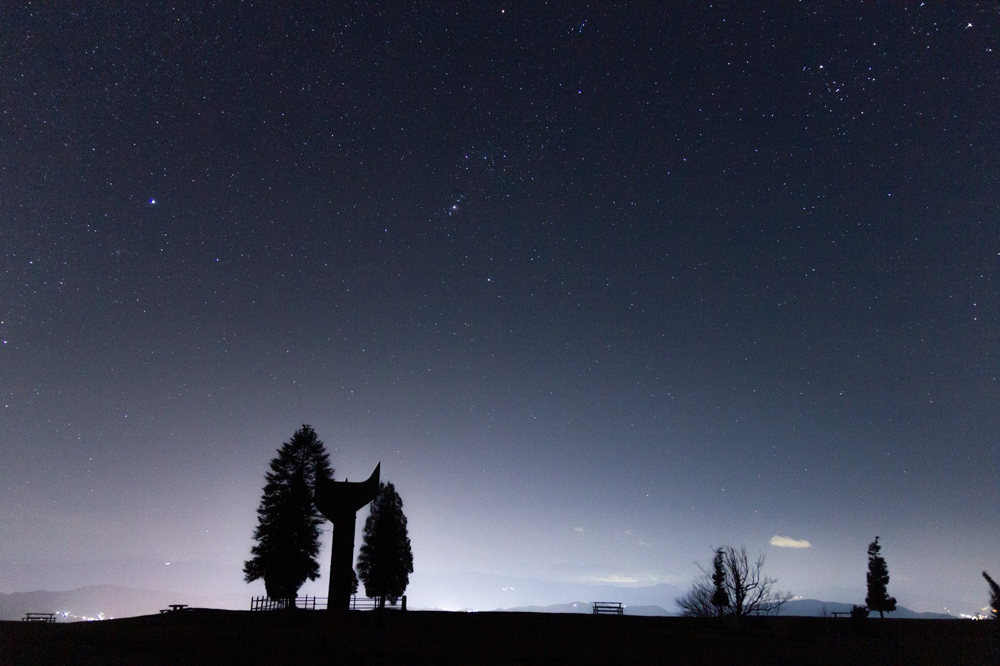

Smetovi je planina u općini Zenici. Najviši je vrh na 1025 metara nadmorske visine. Od središta Zenice udaljena je oko 8 kilometara.
Poznato je izletište Zeničanima. Lijepih je krajobraza zbog čega je omiljena slikarima i fotografima. Mnogo je uređeno za rekreativce. To su uređene su staze za šetnju, vožnju biciklom, mjesta za roštiljanje, odmor i ostalo. Izgrađeni su sportski tereni za košarku, nogomet i odbojku na pijesku, staze za brdski biciklizam i planinarenje. Na planini je sportsko-rekreacijski centar. Na platou je restoran i prenoćište. Uređeno je i za zimske ugođaje staza za skijaše i skijaški lift.
Prema narodnoj predaji dobila je ime gdje se gorostas „smeo“, pa je planina dobila ime Smetovi. Gorostas iz narodne predaje zvao se Vran i sukobio se s hrabrim ratnikom imena Duk. Mjesto gdje su se sukobili kiklop Vran i čovjek Duk zove se Vranduk. Gorostas se spodbio i smeo na Smetovima.
Na vrhu Smetova je spomenik podignut borcima Zeničkog partizanskog odreda. Na njemu su imena izginulih boraca i stihovi Izeta Sarajlića: “I ne pitaj jesu li se mogli vratiti, i ne pitaj je li se moglo natrag, dok je posljednji put, crven kao komunizam gorio horizont njihovih želja". Spomenik je izgrađen je 1968. godine, a na metalnu konstrukciju bile su položene aluminijske ploče, koje su za rata nestale, zbog čega sada hrđa.